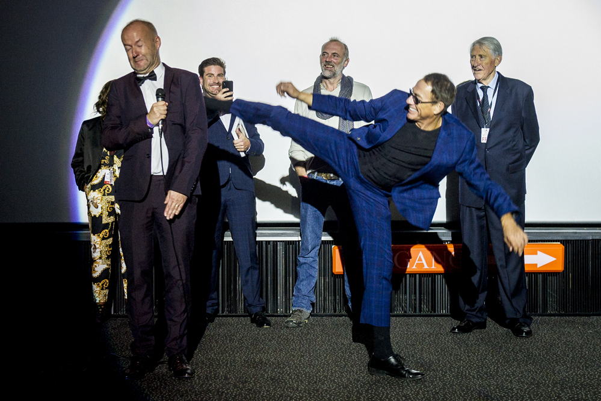
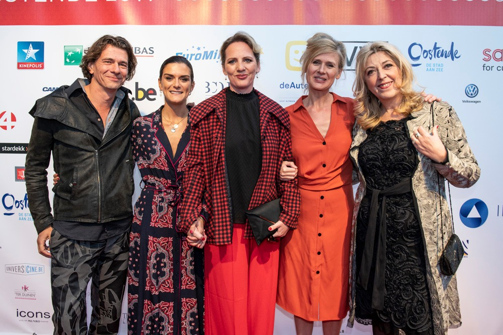
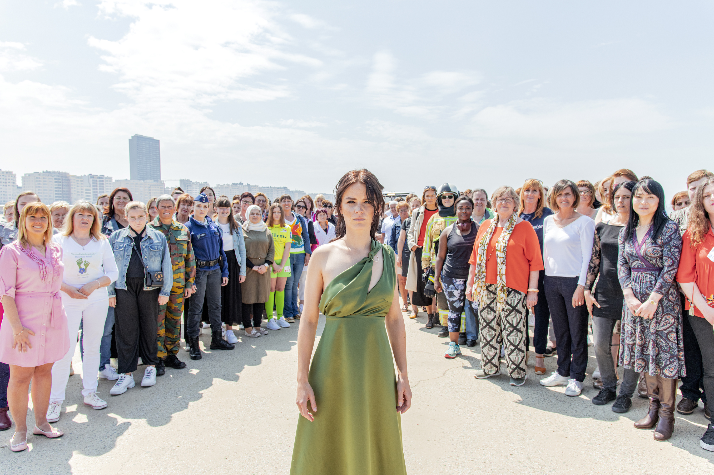

For 13 editions, The Ostend Film Festival has been the leading cultural event in September. The last couple of years, we've reached our maximum potential, both in content and seating capacity. In order to expand the festival, we are making the move to January.
28.08.2022
Competition information available
A Belgian/Dutch jury of film programmers will decide on the 'Best Coproduction' (Money prize of 5k and
marketing package). There are also recognitions for 'Best Screenplay' & 'Best Directing'.
All films screened during FFO are eligible for the EuroMillions Audience Award. Every festival visitor
received a voting form that determines the winner.

20.08.2022
We're revamping the Ensor Awards
In 2010, The Ostend Film Festival initiated an annual award show that acknowledges remarkable film
performances in the local AV-sector. The Flemish Film Awards became The Ensors, an annual gala at The Ostend
Kursaal. A fitting closing event for the festival.
In order to offer The Ensors every opportunity for further development, FFO consulted with the Flemish
Independent Film and Television Producers (V.O.F.T.P.), the Union of Directors, the Screenwriters Guild, the
Belgian Society of Cinematographers (S.B.C.), Montage.be and the Actor's Guild, in coordination with the
Flemish Audiovisual Fund. This resulted in the creation of a separate entity for The Ensors. You can read
all about it on ensors.be!

18.08.2022
Cinema Storck now at our film festival
Cinema Storck will take place from October to June in Kinepolis Ostend. The complete program can be found
(only during this period) on www.cinemastorck.be and in our monthly program flyer. Tickets can be bought
online or at the box office of Kinepolis Ostend!

16.08.2022
Cut Lab programme
Many of the projects have gone on to premiere in A-list festivals such as Berlinale, Cannes and Toronto. First Cut Lab is organised in international and national formats, with very similar approach. We are aiming to expand the scope of the workshop to include more countries in the coming years.